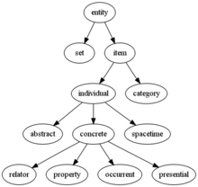

LinkS
Knowledge representation and knowledge engineering are central to classical AI research. Some "expert systems" attempt to gather explicit knowledge possessed by experts in some narrow domain. In addition, some projects attempt to gather the "commonsense knowledge" known to the average person into a database containing extensive knowledge about the world. Among the things a comprehensive commonsense knowledge base would contain are: objects, properties, categories and relations between objects; situations, events, states and time; causes and effects; knowledge about knowledge (what we know about what other people know); and many other, less well researched domains. A representation of "what exists" is an ontology: the set of objects, relations, concepts, and properties formally described so that software agents can interpret them. The semantics of these are captured as description logic concepts, roles, and individuals, and typically implemented as classes, properties, and individuals in the Web Ontology Language. The most general ontologies are called upper ontologies, which attempt to provide a foundation for all other knowledge by acting as mediators between domain ontologies that cover specific knowledge about a particular knowledge domain (field of interest or area of concern). Such formal knowledge representations can be used in content-based indexing and retrieval, scene interpretation, clinical decision support, knowledge discovery (mining "interesting" and actionable inferences from large databases),and other areas.
